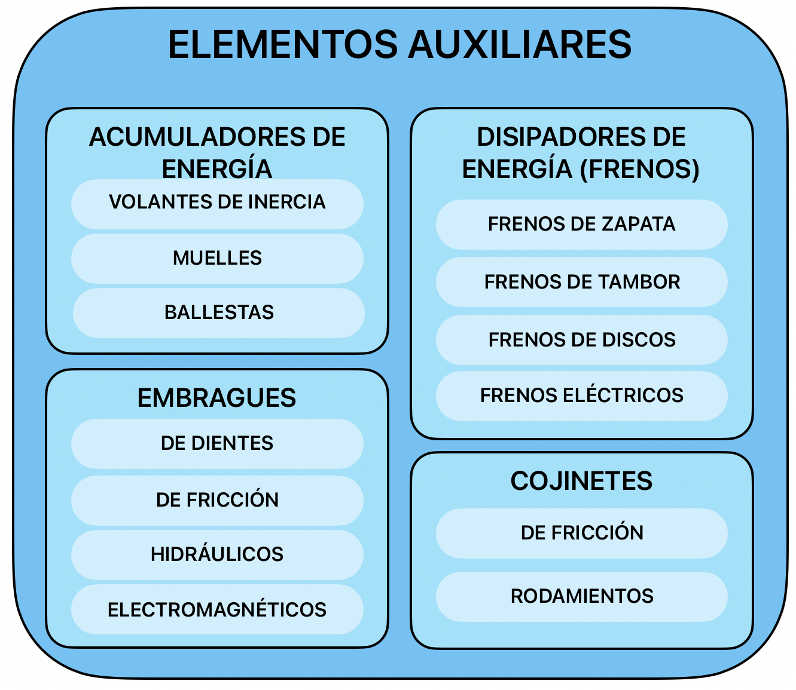

Material de apoyo
Los elementos auxiliares de las máquinas son aquellos elementos que, aunque no se clasifican dentro de los elementos transmisores y transformadores del movimiento, son necesarios para facilitar un funcionamiento idóneo de las máquinas.
Aunque pueden ser de muchos tipos, estudiaremos los principales. Para cerrar el bloque veremos además los elementos de unión, que mantienen montado todo el conjunto:
